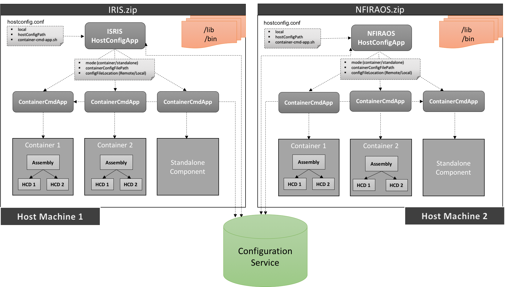

csw-host-config
This is just a helper to create a host configuration application. A component/subsystem is can create their own host configuration application using this helper, to be more precise every github repository should have one host configuration application. The reason for having one app per repo is, when you run universal:publish task, it will generate zip which will be self contained (will have all the required dependencies) and can be deployed independently on any machine.
This application will start multiple containers on a given host machine and each container will have single/multiple components.
How to create
- Scala
-
object HostConfigApp extends App { HostConfig.start("Host-Config-App", args) } - Java
-
public class JHostConfigApp { public static void main(String args[]) { JHostConfig.start("JHost-Config-App", args); } }
It is not necessary to have a name of the application as HostConfigApp/JHostConfigApp, user can choose this name.
Command line parameter options
--localis an optional parameter. When supplied, get the host configuration file from local machine located at hostConfigPath, else fetch it from config service<file>is a mandatory parameter. It specifies Host configuration file path-s, --container-script <script-path>specifies the path of generated shell script of container command app from taskuniversal:packageBin(sbt-native-packager task)--helpprints the help of the application.--versionprints the version of the application.
Examples
Pre-requisites
- Run
sbt project/universal:packageBincommand. Here project contains HostConfigApp and ContainerCmdApp and it depends on required components. Ex. Hcd’s, Assembly’s etc. - Navigate to
project/target/universaldirectory - Unzip file created with projects name
- Navigate to
bindirectory from unzipped content
Sbt task: sbt project/universal:packageBin creates following four scripts in bin directory:
trombone-host-config-app: Responsible for starting multiple containers. It takeshostconfig.conffile as an argument which contains list of container specifications.trombone-container-cmd-app: Responsible for starting single container or component in standalone mode. It takescontainerConfig.conffile as an argument which contains single container specifications.trombone-host-config-app.bat: For windows machine.trombone-container-cmd-app.bat: For windows machine.
Example: ./trombone-host-config-app hostconfig.conf -s ./trombone-container-cmd-app
Explanation: Fetch hostconfig.conf from configuration service which contains multiple container configuration, then invoke trombone-container-cmd-app script per container configuration which spawns container
Example: ./trombone-host-config-app --local hostconfig.conf -s ./trombone-container-cmd-app
Explanation: Fetch and parse hostconfig.conf from current directory which contains multiple container configuration, then invoke trombone-container-cmd-app script per container configuration which spawns container
In above examples, we are passing argument: -s ./trombone-container-cmd-app to ./trombone-host-config-app. here -s stands for script and following to that is script name, in our case its trombone-container-cmd-app. and if you notice, trombone-container-cmd-app does not take container configuration file. hostconfig.conf passed to trombone-host-config-app contains location of container configuration files. Host config app internally parses hostconfig.conf and passes container configuration file location to trombone-container-cmd-app.
Find more details of ContainerCmd application here.
Where does it fit in overall deployment strategy (may change)

Custom Host Configuration
- hostconfig.conf
-
# This is a host configuration file which contains list of containers to be spawned by host configuration app containers: [ { # mode can be one of Container or Standalone mode: "Container" # path of individual container configuration file configFilePath: "/Users/salonivithalani/Desktop/tw_tmt/csw-prod/examples/src/main/resources/assemblyContainer.conf" # provide 'Remote' if file needs to fetched from config service else # provide 'Local' to fetch file from local machine configFileLocation: "Local" }, { mode: "Standalone" configFilePath: "/Users/salonivithalani/Desktop/tw_tmt/csw-prod/examples/src/main/resources/hcdStandalone.conf" configFileLocation: "Local" } ]
Help
Use the following command to get help on the options available with this app
./bin/trombone-host-config-app --help
Version
Use the following command to get version information for this app
./bin/trombone-host-config-app --version
Systemd configuration
Using systemd, you can configure host configuration application to spawn containers on a machine to be run automatically on system startup.
For detailed information on systemd configuration, please refer readme.md